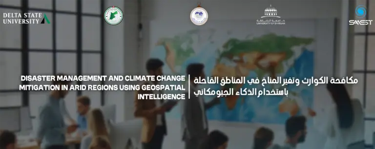

مؤتمرات وندوات وملتقيات أخرى
اجتماع مكافحة الكوارث وتغير المناخ في المناطق القاحلة

مكافحة الكوارث وتغير المناخ في المناطق القاحلة باستخدام الذكاء الجيومكاني
27-25 نوفمبر 2024، الشارقة، الإمارات العربية المتحدة.
مستقبل الأرض على المحك حيث يواجه العالم تغير المناخ بمعدلات غير مسبوقة في تاريخ البشرية. يسهم تغير المناخ في توسيع الفجوة الاقتصادية والاجتماعية، ويقلص التنوع البيولوجي، ويحول الأراضي الزراعية الخصبة التي نحتاجها لإطعام البشرية إلى أراضٍ قاحلة، ويدمر تراثنا المشترك من خلال تدمير مواقع التراث العالمي. هذه التحديات تظهر كقوى مدمرة كبيرة في حياة الأفراد والمجتمعات، مما يغذي بدوره تغير المناخ الناجم عن الأنشطة البشرية ويزيد من تكرار وشدة الكوارث. المناطق القاحلة هي الأكثر عرضة لتغير المناخ بسبب ندرة وهشاشة الموارد الطبيعية، حيث يمكن أن تؤدي التغيرات الطفيفة في النظم البيئية والمناخ والأنشطة البشرية إلى تضخيم الكوارث.
هناك عدم يقين كبير بشأن المخاطر والنتائج المحتملة لمثل هذه الكوارث. يحتاج مدراء الكوارث، والعلماء، وصانعو القرارات، والقادة إلى اتخاذ قرارات حول كيفية التخطيط وتقليل المخاطر والاستجابة والتعافي من الكوارث بناءً على معلومات غير كاملة أو غير دقيقة في بعض الأحيان. هذا النهج يشبه المخاوف المتعلقة بالدفاع الوطني، بما في ذلك الحاجة إلى اتباع نهج يعتمد على “المخابرات”. لقد أثبتت نظم الاستشعار عن بعد الأرضية والفضائية، ونظم المعلومات الجغرافية (GIS)، وتقنيات التصور المعتمدة على الموقع، والقدرة على تحليل مجموعات بيانات ضخمة على أساس مكاني، أنها موارد لا تقدر بثمن في مكافحة الكوارث، خاصة عندما يُستخدم الجغرافيا كعدسة لرؤية مشكلات الكوارث. هذا النهج يعزز “المخابرات الجغرافية المكانية” أو “GEOINT”، مع تحويل المجال من الدفاع إلى الكوارث.
تولت العديد من بعثات الاستشارات الفنية التابعة لـ UN-SPIDER مهمة تقييم قدرة الدول النامية على تنفيذ حلول GEOINT لمواجهة الكوارث. ويشير التكرار الواضح في معظم الدراسات إلى أن فشل حلول GEOINT في دعم إدارة الكوارث لا يعود إلى نقص في القدرات العلمية أو التكنولوجية، بل إلى نقص التنسيق بين جميع الأطراف المعنية. التعاون بين الجهات التنظيمية والحكومية والتخصصية، عند استخدام GEOINT، هو أمر ضروري لتحقيق مرونة أفضل في مواجهة الكوارث. بالإضافة إلى ذلك، يعد هذا التعاون أساسيًا لتحقيق الأهداف التي وضعتها المجتمع الدولي من خلال إطار سينداي للحد من المخاطر، واتفاقية باريس، وأهداف التنمية المستدامة للأمم المتحدة
النتائج المرجوة من هذا الاجتماع هي:
1- سيظهر المشاركون القدرة على مناقشة تغير المناخ والكوارث في سياق إدارة الكوارث كما هو موضح في اتفاقية سينداي.
2- سيتمكن المشاركون من مناقشة الموارد والخدمات الجيومكانية المجانية المفيدة لإدارة الكوارث.
3- سيكتسب المشاركون الوعي بالشركاء المحتملين الآخرين العاملين في مجال الكوارث والاستخبارات الجغرافية المكانية (GEOINT) في منطقة الشرق الأوسط وشمال إفريقيا.
4- سيناقش المشاركون المنتجات والخدمات الجيومكانية التي يمكن تطبيقها على كل مرحلة من مراحل إدارة الكوارث.
5- سيتمكن المشاركون من وصف الميثاق الدولي والإجراءات اللازمة لطلب تفعيل هذا الميثاق.
المحور الاول : فهم التحديات الخاصة بالمناطق الجافة:
– تأثير التغيرات المناخية على الموارد المائية.
– ازدياد احتمالية الجفاف والتصحر.
المحور الثاني : دور الذكاء الجغرافي في رصد الأزمات:
– استخدام نظم المعلومات الجغرافية (GIS) لتحليل المخاطر.
– دور الاستشعار عن بعد في تتبع التغيرات البيئية.
المحور الثالث : استراتيجيات التكيف والحد من المخاطر:
– تطوير استراتيجيات إدارة المياه المستدامة.
– تقنيات الزراعة الذكية لمواجهة التصحر.
المحور الرابع : التعاون المحلي والدولي:
<
– أهمية الشراكات بين الحكومات، المنظمات غير الحكومية، والقطاع الخاص.
– تبادل البيانات والخبرات بين الدول.
المحور الخامس : التكنولوجيا والابتكار:
– استخدام التكنولوجيا الحديثة لتحسين الاستجابة للكوارث
– التطبيقات المبتكرة في مراقبة وتحليل البيانات البيئية.
المحور السادس : التدريب وبناء القدرات:
– أهمية تدريب الكوادر المحلية على استخدام الأدوات الجغرافية.
– بناء قدرات المجتمعات المحلية للتعامل مع الأزمات البيئية.
المحور السابع دراسات الحالة والأمثلة الناجحة:
– استعراض تجارب ناجحة في استخدام الذكاء الجغرافي لمواجهة التحديات في مناطق جافة.
1- الخبراء والباحثين في مجال البيئة والتغير المناخي:
– العلماء المتخصصون في دراسة تأثير التغيرات المناخية على المناطق الجافة.
– الباحثون في مجال نظم المعلومات الجغرافية (GIS) والتكنولوجيا البيئية.
2- المسؤولون الحكوميون وصناع القرار:
– المسؤولون في وزارات البيئة، الزراعة، والمياه.
– صناع القرار المعنيون بتطوير استراتيجيات التكيف مع التغير المناخي.
3- المنظمات غير الحكومية (NGOs) والمؤسسات الإنسانية:
– المنظمات التي تعمل في مجال الإغاثة والمساعدات الإنسانية في المناطق المتأثرة بالكوارث البيئية.
– المؤسسات التي تهدف إلى تعزيز التنمية المستدامة في المناطق الجافة.
4- المهنيون في قطاع الزراعة وإدارة الموارد المائية:
– المزارعون والمستشارون الزراعيون المتخصصون في تقنيات الزراعة المستدامة.
– المهنيون العاملون في إدارة الموارد المائية والتخطيط البيئي.
5- القطاع الخاص والشركات التقنية:
– الشركات التي تقدم حلولًا تكنولوجية متعلقة بالذكاء الجغرافي والابتكار البيئي.
– الشركات المتخصصة في تطوير أدوات ومعدات لمراقبة وإدارة البيئة.
6- المجتمعات المحلية وسكان المناطق الجافة:
– ممثلو المجتمعات المحلية الذين يتأثرون مباشرةً بالتغيرات المناخية.
– القادة المحليون والمجتمع المدني الذين يمكنهم الاستفادة من المعلومات والتقنيات المقدمة.
7- الطلاب والمهتمون بالدراسات البيئية:
– الطلاب في مجالات البيئة، الجغرافيا، والهندسة البيئية.
– الشباب المهتمون بالمواضيع المتعلقة بالمناخ والكوارث الطبيعية.
الاتحاد العربي لعلوم الفضاء والفلك ( AUASS)
الاتحاد العربي لعلوم الفضاء والفلك هو منظمة غير حكومية متخصصة تأسست في عام 1998 ومقرها العاصمة الأردنية عمان. يُعد الاتحاد أحد الاتحادات النوعية المتخصصة التي تعمل تحت إطار مجلس الوحدة الاقتصادية التابع لجامعة الدول العربية. كما أنه عضو في الاتحاد الفلكي الدولي، مما يعزز دوره كمؤسسة بارزة في مجال الفضاء والفلك على الصعيدين الإقليمي والدولي.
الأهداف الرئيسية:
- تعزيز التعاون العلمي بين الدول العربية: يهدف الاتحاد إلى تعزيز التعاون والتنسيق بين الدول العربية في مجالات الفضاء والفلك من خلال تنظيم المشاريع البحثية المشتركة والمبادرات العلمية التي تجمع بين الخبراء والعلماء من مختلف البلدان.
- تطوير البحث العلمي والتقني: يسعى الاتحاد إلى تحسين مستوى البحث العلمي والتعليم في مجال الفضاء والفلك، ويحقق ذلك من خلال تنظيم المؤتمرات والندوات وورش العمل التي تهدف إلى تعزيز المعرفة وتبادل الخبرات.
- نشر المعرفة والتوعية: يعمل الاتحاد على نشر المعلومات العلمية وتعزيز الوعي بأهمية علوم الفضاء والفلك في المجتمع العربي، ويشجع على الاستفادة من التقدم التكنولوجي والعلمي في هذه المجالات.
الأنشطة الرئيسية:
– تنظيم الفعاليات العلمية: يستضيف الاتحاد مؤتمرات وندوات دورية تُعقد في الدول العربية، حيث يجتمع العلماء والباحثون لتبادل المعرفة والمناقشة حول أحدث التطورات في مجال الفضاء والفلك.
– تنفيذ المشاريع البحثية: يشجع الاتحاد على إجراء مشاريع بحثية مشتركة بين الدول الأعضاء، مما يساهم في تحقيق تقدم علمي وتطوير حلول تقنية مبتكرة.
– برامج التدريب والتطوير: ينظم الاتحاد برامج تدريبية وورش عمل تستهدف الباحثين والطلاب في مجال الفضاء والفلك، بهدف تعزيز مهاراتهم وقدراتهم العلمية.
– التعاون الدولي: يسعى الاتحاد إلى تعزيز التعاون مع المنظمات الدولية مثل الاتحاد الفلكي الدولي، مما يتيح له تبادل المعرفة والخبرات والتكنولوجيا على نطاق عالمي.
العضوية والارتباطات:
– يُعد الاتحاد عضوًا في الاتحاد الفلكي الدولي، مما يعزز علاقاته مع المؤسسات الدولية ويسهم في تبادل المعرفة والخبرات على الصعيدين الإقليمي والدولي.
– يعمل الاتحاد تحت إشراف مجلس الوحدة الاقتصادية لجامعة الدول العربية، مما يعزز من دوره كمؤسسة متخصصة في تعزيز التعاون والتنسيق في مجال الفضاء والفلك في العالم العربي.
يُعتبر الاتحاد العربي لعلوم الفضاء والفلك ركيزة أساسية في تطوير التعاون العلمي والتقني في المجالات الفضائية والفلكية في العالم العربي، ويعزز من دور الأمة العربية في تحقيق التقدم العلمي والتكنولوجي في هذه المجالات.
جامعة الشارقة:
جامعة الشارقة هي مؤسسة تعليمية رائدة تقع في إمارة الشارقة، الإمارات العربية المتحدة. تأسست في عام 1997، وتعتبر من أبرز الجامعات في المنطقة، حيث تقدم مجموعة واسعة من البرامج الأكاديمية في مختلف التخصصات. تتميز الجامعة بجودة التعليم والبحث العلمي، وتعمل على تحقيق التميز الأكاديمي من خلال اعتماد برامجها ومرافقها الحديثة.
أكاديمية الشارقة لعلوم الفلك وتكنولوجيا الفضاء:
أكاديمية الشارقة لعلوم الفلك وتكنولوجيا الفضاء هي مؤسسة متخصصة تابعة لجامعة الشارقة، وتهدف إلى تطوير البحث والتعليم في مجال الفلك وتكنولوجيا الفضاء. تأسست الأكاديمية لتعزيز المعرفة والابتكار في هذه المجالات من خلال برامج أكاديمية متقدمة، وبحث علمي، ومشروعات تكنولوجية.
الأهداف الرئيسية:
– تقديم برامج أكاديمية متقدمةفي علوم الفلك وتكنولوجيا الفضاء.
– دعم البحث العلمي والتطوير في مجالات الفضاء والفلك.
– التعاون مع المؤسسات العالمية لتعزيز التبادل العلمي والتقني.
الأنشطة الرئيسية:
– تنظيم مؤتمرات وندوات علمية في مجال الفضاء.
– تقديم برامج تدريبية وورش عمل للمهتمين في الفلك وتكنولوجيا الفضاء.
– المشاركة في مشاريع بحثية وتطويرية متقدمة.
كلتا المؤسستين تسعى إلى تعزيز المعرفة والابتكار في مجالاتهما، وتقديم التعليم والبحث الرائد في المنطقة
جامعة ولاية دلتا هي عضو في نظام معهد مسيسيبي للتعليم العالي للكليات والجامعات التي ترعاها الدولة. تأسست في عام 1925 كمدرسة عادية (كلية لتأهيل المعلمين)، ومنذ ذلك الحين نمت لتصبح جامعة شاملة تخدم وادي نهر المسيسيبي السفلي. اشتُق اسمها “دلتا” من شكل السهل الفيضي القديم الذي تقع فيه مدينتها كليفلاند بولاية مسيسيبي. تُعتبر المنطقة واحدة من أكثر المناطق الزراعية إنتاجية في العالم. ومع ذلك، تواجه هذه النعم تحديات عديدة مثل الكوارث الطبيعية المتكررة التي تشمل الفيضانات، الأعاصير، العواصف الرعدية القوية، البرق الشديد، العواصف الثلجية والجليدية الكبيرة، الزلازل الناجمة عن صدع مدريد الجديد، الآفات، الأعاصير المدارية، ومجموعة متنوعة من الكوارث التي تسببها البشر.
يضم مركز تكنولوجيا المعلومات الجغرافية متعددة التخصصات بجامعة ولاية دلتا، الذي افتتح في عام 2004، المكتب الشمالي الأمريكي لمنصة الأمم المتحدة للاستجابة للكوارث والطوارئ باستخدام الفضاء. يقوده أستاذ الممارسة تالبوت بروكس، ويضم المركز 13 من أعضاء هيئة التدريس المتفرغين وغير المتفرغين الذين يتخصصون في تطبيق تقنيات المعلومات الجغرافية في مواجهة الكوارث، والأزمات، والحروب، والشؤون الإنسانية. يقدم المركز شهادات جامعية، ودرجات بكالوريوس في العلوم التطبيقية، ودرجات ماجستير في العلوم التطبيقية في مجال تقنيات المعلومات الجغرافية عبر برامج تعليمية عبر الإنترنت لأكثر من 150 طالبًا من جميع أنحاء العالم.
لدى المركز تاريخ طويل في تقديم الدعم الجغرافي المكاني أثناء الكوارث والأزمات حول العالم. شارك أعضاء هيئة التدريس والموظفون والطلاب في الاستجابة لأكثر من 60 حدثًا حول العالم خلال العقدين الماضيين. كما شارك المركز في بعثات الأمم المتحدة لتقديم المشورة الفنية في دول مثل موزمبيق، الجزائر، أفغانستان، نيبال، منغوليا، الصين، فيتنام، لاوس، وأرمينيا. وبدأ في عام 2020 برعاية فعاليات تهدف إلى لفت الانتباه إلى التحديات الفريدة التي تواجهها الدول في المناطق الجافة، خاصة في الشرق الأوسط وشمال إفريقيا.
في قرارها 61/110 الصادر في 14 ديسمبر 2006، وافقت الجمعية العامة للأمم المتحدة على إنشاء “منصة الأمم المتحدة للمعلومات الفضائية لإدارة الكوارث والاستجابة للطوارئ – UN-SPIDER” كبرنامج جديد للأمم المتحدة، مع بيان المهمة التالي: “ضمان أن جميع الدول والمنظمات الدولية والإقليمية لديها الوصول إلى وتطوير القدرة على استخدام جميع أنواع المعلومات الفضائية لدعم دورة إدارة الكوارث بالكامل”.
ساهمت عدد من المبادرات في السنوات الأخيرة في جعل تقنيات الفضاء متاحة للمساعدات الإنسانية والاستجابة للطوارئ. ومع ذلك، فإن برنامج UN-SPIDER هو الأول الذي يركز على ضرورة ضمان الوصول إلى هذه التقنيات واستخدامها خلال جميع مراحل دورة إدارة الكوارث، بما في ذلك مرحلة الحد من المخاطر التي تعد أساسية للحد من خسائر الأرواح والممتلكات.
يحقق برنامج UN-SPIDER هذا الهدف من خلال التركيز على أن يكون بوابة للمعلومات الفضائية لدعم إدارة الكوارث، من خلال العمل كجسر لربط مجتمعات إدارة الكوارث وإدارة المخاطر والمجتمعات الفضائية، ومن خلال تسهيل بناء القدرات وتعزيز المؤسسات، لا سيما في الدول النامية. يتم تنفيذ UN-SPIDER كشبكة مفتوحة من مقدمي الحلول الفضائية لدعم أنشطة إدارة الكوارث. إلى جانب فيينا (حيث يقع مكتب الأمم المتحدة لشؤون الفضاء الخارجي)، يمتلك البرنامج أيضًا مكتبًا في بون، ألمانيا، ومكتبًا آخر في بكين، الصين.
يتلقى المكتب في فيينا الدعم المالي والعيني من وزارة النقل والابتكار والتكنولوجيا الفيدرالية النمساوية (bmvit) ووكالة النهوض بالبحث النمساوية (FFG). كما يستفيد مكتب بون من الدعم المالي والعيني المقدم من وزارة الشؤون الاقتصادية والطاقة الفيدرالية الألمانية (BMWi) ومركز الفضاء الألماني. أما مكتب بكين فيستفيد من الدعم المالي والعيني المقدم من وزارة إدارة الطوارئ لجمهورية الصين الشعبية.
الجمعية الجغرافية الأردنية
تعتبرالجمعية الجغرافية الأردنية من الجمعيات الوطنية العلمية في المملكة الاردنية الهاشمية وتتبع لوزارة الثقافة حيث تساهم في فهم الجغرافيا وتعميق دورها في مختلف المجالات وتعزيز أهميتها في حياة المجتمع. كما تعمل على تطوير مهارات المختصين والمهتمين بهذا الحقل العلمي بما يسهم بشكل كبير في فهم أعمق للعالم من حولنا ولعب دورًا هامًا في حل التحديات التي تواجهنا.
وتسعى الجمعية الجغرافية الاردنية الى دعم وتشجيع البحث الجغرافي في مجموعة متنوعة من المواضيع بما في ذلك البيئة، والتنمية المستدامة، والتغيرات المناخية، والتخطيط الحضري، ونشر المعرفة الجغرافية من خلال الندوات والمؤتمرات والنشرات والكتب والمقالات. ونعمل من خلال الجمعية على تقديم برامج تعليمية وتدريبية للمختصين وطلاب الجامعات والمعاهد لتطوير مهارتهم في مجالات نظم المعلومات الجغرافية والاستشعار عن بعد. ونتطلع في الجمعية الجغرافية الاردنية الى التعاون مع المؤسسات الوطنية والاقليمية والدولية لتبادل المعرفة والتجارب وتعزيز التعاون الجغرافي للمساهمة في ايجاد حلول عملية للتحديات البيئية والاقتصادية، ورفع مستوى الوعي بأهمية الجغرافيا وتأثيرها على حياتنا اليومية والتشجيع على استخدام الجغرافيا كأداة لفهم وحل المشكلات.
تعتمد الجمعية في تحقيق أهدافها على عدة وسائل، منها إعداد الدراسات والأبحاث العلمية، وتقديم الاستشارات للجهات الحكومية والخاصة في مجالات التخطيط المكاني، واستثمار الموارد الطبيعية، والاقتصاد، والعمران. بالإضافة إلى تطوير التعليم الجغرافي، وتعزيز استخدام نظم المعلومات الجغرافية والاستشعار عن بعد.
وتسعى الجمعية إلى نشر الكتب والأطالس، وإصدار مجلة علمية محكمة، وتأسيس مكتبات متخصصة في علوم الجغرافيا. كما تنظم ندوات علمية، وتشارك في المؤتمرات المحلية والإقليمية، مع التواصل مع جمعيات ومؤسسات وشخصيات متخصصة في الدراسات الجغرافية
بالإضافة إلى ذلك، تنظم الجمعية رحلات استكشافية للتعرف على المعالم الجغرافية والتاريخية في الأردن، حيث تقدم شروحًا حول طبيعة المنطقة ومزاياها
تحتوي المكتبة الجغرافية الأفتراضية للجمعية على مجموعة كبيرة من الكتب والمصورات باللغتين العربية والأجنبية، تغطي مواضيع الجغرافيا، التاريخ، الآثار، والتربية. وتضم أيضًا مجلات علمية تصدر عن جمعيات وأقسام الجغرافيا في الجامعات العالمية. الجمعية تشجع أعضائها على إصدار البحوث والدراسات التي تسهم في التنمية العلمية والاقتصادية في الأردن.
فيما يتعلق بالندوات والمؤتمرات، تعقد الجمعية لقاءات تتناول موضوعات متعددة مثل التغير المناخي، البيئة، التصحر، التلوث، الإنتاج الزراعي، والتنمية المستدامة
-
انتهاء موعد التسجيل و تسليم الملخصات
30/10/2024
-
موعد تسلم قبول الملخصات
30/10/2024
-
آخر موعد لتسليم الأوراق البحثية كاملة
10/11/2024
-
افتتاحية الندوة
25/11/2024
-
اختتام الندوة
dmcc-conf@auass.com
د.عوني محمد الخصاونة - الاتحاد العربي لعلوم الفضاء والفلك
د. تالبوت بروكس - جامعة ولاية دلتا الحكوميه
Summary templates
صفحة منقولة من موقع الاتحاد كما نُشرت، مع تنظيف التنسيق وحذف عناوين البريد والهواتف الشخصية.
مؤتمرات وندوات وملتقيات أخرى
- المؤتمر العالمي الأول لاستكشاف الفضاء: القمر وما بعده
- اجتماع الشرق الأوسط وأفريقيا الإقليمي للاتحاد الفلكي الدولي (MEARIM)
- المؤتمر العربي الثامن للفلك والجيوفيزياء
- المؤتمر الحادي عشر: شخصيات مهمة في تاريخ الحضارة العربية الإسلامية
- المؤتمر الثاني عشر للجمعية الأردنية لتاريخ العلوم
- الندوة الدولية: التطورات في الاتصالات الفضائية (تشرين الثاني 2024)
- الورشة الفلكية العربية لفيزياء الشمس 2025
- المدرسة الصيفية الفلكية الإقليمية الثالثة (3RASS) في مرصد بيوراكان للفيزياء الفلكية- أرمينيا في الفترة من 11 إلى 15 سبتمبر 2023
- ورشة علمية حول استكشاف الفضاء والابتكار
- الملتقى العربي الثالث لهواة علوم الفضاء والفلك، الجزائر
- الملتقى العربي الثامن لعلوم الفضاء والفلك
- المهرجان الوطني السادس عشر في علم الفلك الجماهيري
- المهرجان الوطني الثامن عشر في علم الفلك الجماهيري – قسنطينة – الجزائر
- رئيس المعهد القومي للبحوث الفلكية والجيوفيزيقية يزور مقر الاتحاد العربي لعلوم الفضاء والفلك في عمّان